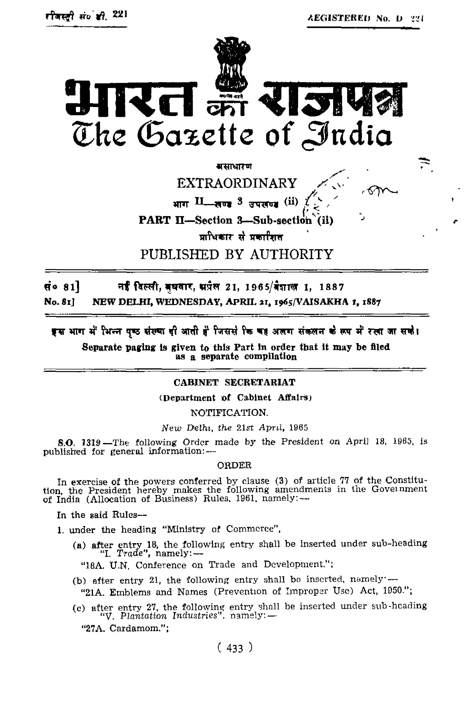
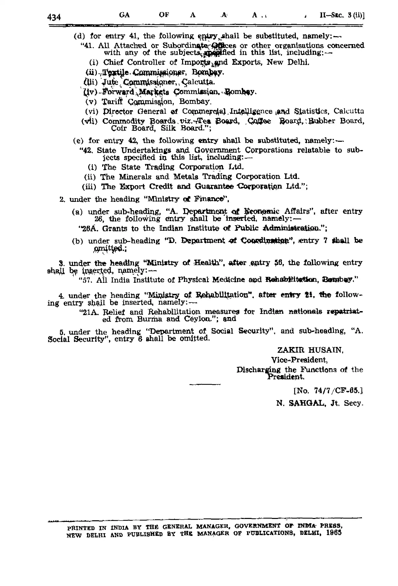

Amendment #38 (S.O. 1319, 1965)
10 changes: 0 to the First Schedule, 10 to the Second Schedule. 10 applied
The order, page by page
Page 1 of 2

123after Schedule 2 › Ministry of Commerce › I. Trade › entry 18
- 18A. U.N, Conference on Trade and Development.
applied at schedule 2 › ministry MINISTRY OF COMMERCE › group_heading I › entry 18A in the Rules after #38
after Schedule 2 › Ministry of Commerce › entry 21
- 21A. Emblems and Names (Prevention of Improper Use) Act, 1950.
applied at schedule 2 › ministry MINISTRY OF COMMERCE › group_heading III › entry 21A in the Rules after #38
after Schedule 2 › Ministry of Commerce › V Plantation Industries › entry 27
- 27A. Cardamom.
applied at schedule 2 › ministry MINISTRY OF COMMERCE › group_heading V › entry 27A in the Rules after #38
Page 2 of 2

45678910Schedule 2 › Ministry of Commerce › entry 41
- 41. All Attached or Subordinate Offices or other organisations concerned with any of the subjects, upeifled in this list, including:
- i. Chief Controller of Imports and Exports, New Delhi.
- ii. Textile, Commissioner, Bombay.
- ii. Jute Commissioner, Calcutta. v) Forward Markets Commission, -Bombey.
- v. Tariff Commission, Bombay.
- vi. Director General of Commercial Intelligence and Statistics, Calcutta
and 1 more
- vii. Commodity Boards viz. Tea Board, Coffee Board, Rubber Board Coir Board, Silk Board.
applied at schedule 2 › ministry MINISTRY OF COMMERCE › group_heading IX › entry 41 in the Rules after #38
Schedule 2 › Ministry of Commerce › entry 42
- 42. State Undertakings and Government Corporations relatable to subjects specified in this list, including:-
- i. The State Trading Corporation Ltd.
- ii. The Minerals and Metals Trading Corporation Ltd.
- iii. The Export Credit and Guarantee Corporation Ltd.
applied at schedule 2 › ministry MINISTRY OF COMMERCE › group_heading IX › entry 42 in the Rules after #38
after Schedule 2 › Ministry of Finance › Department of Economic Affairs › entry 26
- 26A. Grants to the Indian Institute of Public Administration.
applied at schedule 2 › ministry MINISTRY OF FINANCE › department A › group_heading III › group_heading V › entry 26A in the Rules after #38
Schedule 2 › Ministry of Finance › Department of Coordination › entry 7
applied at schedule 2 › ministry MINISTRY OF FINANCE › department D › entry 7 in the Rules after #38
after Schedule 2 › Ministry of Health › entry 56
- 57, All India Institute of Physical Medicine and Rehabilitation, Bombay.
applied at schedule 2 › ministry MINISTRY OF HEALTH › group_heading IV › entry 56 in the Rules after #38
after Schedule 2 › Ministry of Rehabilitation › entry 21
- 21A. Relief and Rehabilitation measures for Indian nationals repatriated from Burma and Ceylon.
applied at schedule 2 › ministry MINISTRY OF REHABILITATION › entry 21A in the Rules after #38
Schedule 2 › Department of Social Security › A. Social Security › entry 6
applied at schedule 2 › department DEPARTMENT OF SOCIAL SECURITY › group_heading A › entry 6 in the Rules after #38
states inferred loose
How this document was read
Changes placed by an inference rule
| Change | Rule | Status | What |
|---|---|---|---|
| 10 | loose | accepted | change 10: group_heading A. Social Security taken for group_heading Social Security, named loosely |
From the Government of India (Allocation of Business) Rules, 1961 and their amendments, as published by the Cabinet Secretariat (cabsec.gov.in), read by orgpedia. The readings of the older scanned gazettes have known gaps.